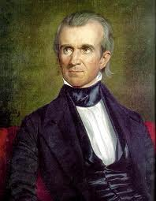

| Key |
| Political Events |
Blue |
| Social Events |
Purple |
| Military Events |
Red |
| Economical Events |
Green |
- 1830
- -In 1830, Andrew Jackson passed the Indian Removal Act, which allowed Jackson to grant unsettled lands west of the Mississippi to Indians in exchange for land in the South which Indians were occupying at the time. Some tribes went peacefully, but many tribes resisted relocation. The law created much enmity between the federal government and the Native Americans, and led to the infamous Trail of Tears 8 years later.
- 1831
- -In 1831, a slave named Nat Turner led a rebellion in the South against slavery. Also known as the Southampton Insurrection, the rebellion took place in Southampton, Virginia. About 55 whites were killed by the slave rebellion, which was the highest number of fatalities there had been from a slave rebellion ever before. The rebellion was put down within a few days, with most of the slaves being executed, but the rebellion caused fear of rebellion throughout the South. It also played an early role in the abolitionist movement.
- 1832
- -The Tariff of 1832 was an attempt to right the wrong created by the Tariff of Abominations in 1828. The Tariff of 1832 reduced the Tariff from 45% to 35%. The Tariff was still deemed an abomination by many in the South, and still left the South angry. They still claimed that the tariff benefitted Northern factories at the expense of Southern farm workers. South Carolina still wanted to nullify the tariff. The Tariff of Abominations and the Tariff of 1832 both led to South Carolina�s Ordinance of Nullification, which created tension between federal and state powers. The Tariff of 1832 was quickly replaced with the Compromise Tariff of 1833.
- -The South Carolina Ordinance of Nullification was an attempt to establish a state�s right to nullify any federal law that the state did not see as beneficial to them. With the South Carolina Ordinance of Nullification, the state of South Carolina declared that the Tariffs of 1828 and 1832 invalid in their state. This led to strict action from Andrew Jackson, who replied with the Force Bill, and refused to accept South Carolina�s Ordinance. This was one of the first of many sectional issues that divided the Union.
- 1833
- -In 1833, Andrew Jackson passed the Force Bill. Jackson passed the Force Bill in response to South Carolina�s Ordinance of Nullification. While Jackson did believe in the power of states and the Southern economy�s predicament, he wouldn�t allow nullification to tear apart the Union. The Force Bill allowed him to send troops into South Carolina to enforce the Tariffs that they intended to nullify. This was another event that created strong sectional tension.
- 1836
- -Texas had been a part of Mexico in 1835. Mexico wanted to populate Texas more, in the hopes that American settlers would integrate and become part of Mexico, helping it expand, so it invited American settlers to Texas. The result of this was that America settlers in Mexico still felt loyalty to the United States, so the settler population of Mexico fought for independence, and eventually Texas became independent of Mexico, hoping to be annexed by the United States. However, America was in no position to go to war with Mexico over Texas at the time, so it left Texas as an independent republic for the time being. Texas later played a major role in sectional divisions and its annexation contributed largely to the Mexican-American War.
- 1837
- -Samuel F.B. Morse created a better version of the electric telegraph, which allowed for communication across long distances. This had a huge impact on the country, as information could now be relayed from one place to another much faster. Morse bettered the existing version of the telegraph. It led to expansion of businesses and increases in immigration, because immigrants could quickly connect with family members back home.
- -In 1837, another market crash occurred in the United States. The cause of the economic crash was a result of the failures of many �wildcat� banks, over speculation, and Jackson�s Specie Circular, which required all property to be bought with hard money. Unemployment soared after the crash. The crash, largely caused by the policies of Andrew Jackson, was blamed on Martin Van Buren as soon as he came into office in 1837, and led to a low public opinion of him.
- 1838
- -Trail of Tears: In 1838 the Cherokee Indians were forced to move away from their homelands by the American government. After the Indian Removal Act was passed, many tribes were forced out of their lands. In 1838, the Cherokees were forced to move from their lands east of the Mississippi River to Oklahoma. Thousands died along the way. This furthered hostilities between the American government and the Indian tribes.
- 1839
- -In 1839, Theodore Dwight Weld wrote �American Slavery As It Is�. His book was one of the first books to be written against the institution of slavery. It brought the concepts of slavery and abolition to the homes of many who hadn�t thought about it before, much like �Uncle Tom�s Cabin� did. It brought many to the abolitionist cause, which was a strong part of sectional divisions. The abolitionist cause became one of the many main causes of the Civil War, and �American Slavery As It Is� furthered the cause.
- 1844
- -Polk was elected for president by the expansionist democrats. He believed in manifest destiny, the belief that the United States would spread from coast to coast, and then eventually the whole continent. His objectives were to have a lowered tariff, restore the independent treasury, acquire California, and settle the Oregon dispute.

- 1845
- -Because Polk won the election, lame-duck President Tyler decided to annex Texas. He did so with a joint resolution. It recieved a majority vote from both housed in Congress, so Texas was finally admitted into the Union. The president signed the resolution three days before he left office.
- -On January 13, Polk sent 4000 men under General Zachary Taylor to march to the Rio Grande. On April 15, Taylor's command was assaulted by the Mexican troops who had crossed the Rio Grande, so on May 9, Congress declared war on Mexico.
This war lasted until 1848. America had some successful military campaigns. Genreal Stephen conquered Santa Fe and southern California. John C. Fremont too
k care of northern California, which caused California to become an independent state for a short time. It was called the Bear Flag republic. Also Zachary Taylor's force won a major battle at Buena Vista.
- -President Polk sent John Slidell to Mexico City. Slidell was to offer up to 25 million for California. His offer was rejected, and Polk used Slidell's rejections as a reason to declare war on Mexico.
- 1846
- -The British proposed to divide the Oregon territory at the 49th parallel. U.S. Senators accepted this proposal. The U.S. was already at war with Mexico, so they could not afford to get in a fight with Britain. This completed Polk's goal of resolving the Oregon conflict.
- -The Walker Tariff of 1846 was designed by Robert J. Walker. The new rate of this tariff was 25 percent, which was reduced from 32 percent rate
of the Tariff of 1842. Polk's goal for a lowered tariff was accomplished.
- -David Wilmot proposed the Wilmot Proviso, which would forbid slavery in the Mexican Cession. The Wilmot Proviso did not pass through the Senate, but it re-opened the issued of whether a state should have slaves or not. General Lewis Cass temporarily found a resolution to this problem. He came up with the idea
of popular sovereignty. The people who settled the land would decide if the state would be free of have slaves.
- 1848
- -The Treaty of Guadalupe Hidalgo was signed. The Rio Grande became the new border of Texas, and the U.S. bought land from New Mexico to California for 15 million. This area is known as the Mexican Cession. The U.S. now stretched from the Atlantic Ocean to the Pacific Ocean, which supported the belief of manifest destiny. Polk's goal was accomplished, and people start moving west to California.
- -Gold was discovered in California. This ignited the gold rush and caused many people to move there in hopes of "striking it rich". The population of California grew quickly, and as a result, it applied for statehood the following year, and that led to the Compromise of 1850. This also resulted in inflation
since more gold meant that more money was in circulation.